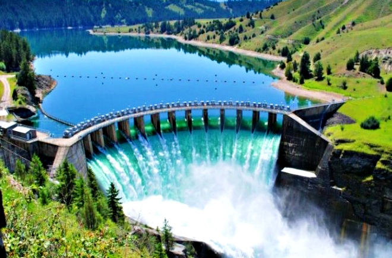
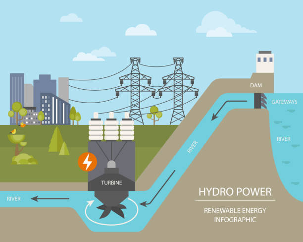

HOW DO WE GET ENERGY FROM WATER?
Hydropower, or hydroelectric power, is a renewable source of energy that generates
power by using a dam or diversion structure to alter the natural flow of a river or
other body of water. Hydropower relies on the endless, constantly recharging system
of the water cycle to produce electricity, using a fuel—water—that is not reduced or
eliminated in the process. There are many types of hydropower facilities, though they
are all powered by the kinetic energy of flowing water as it moves downstream. Hydropower
utilizes turbines and generators to convert that kinetic energy into electricity, which
is then fed into the electrical grid to power homes, businesses, and industries.

HOW EXACTLY IS ELECTRICITY GENERATED AT HYDROPOWER PLANTS?
Because hydropower uses water to generate electricity, plants are usually located on
or near a water source. The energy available from the moving water depends on both the
volume of the water flow and the change in elevation—also known as the head—from one point
to another. The greater the flow and the higher the head, the more the electricity that
can be generated. At the plant level, water flows through a pipe—also known as a
penstock—and then spins the blades in a turbine, which, in turn, spins a generator
that ultimately produces electricity. Most conventional hydroelectric facilities
operate this way, including run-of-the-river systems and pumped storage systems.
